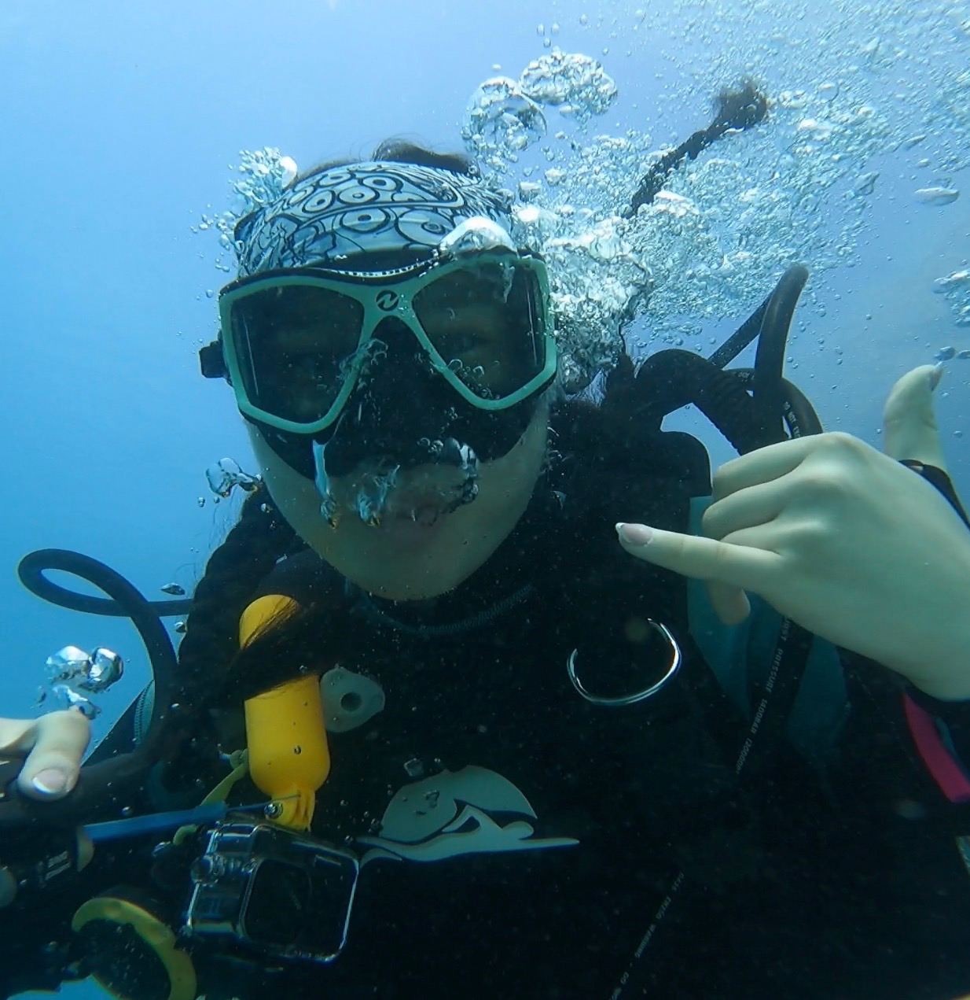

/ about me
Instagram ↗Welcome to my website!
I am a high school senior at Convent of the Sacred Heart in Manhattan, and I am passionate about the intersection of science and technology, as well as how that intersection can be informed by culture, creativity, and philosophy. Specifically, I care a lot about the ocean and the environment, and am interested in how we can apply artificial intelligence and machine learning to them.

In my free time, I love writing and photography, and I also enjoy reading and swimming. I serve on the production team at Hoboken Grace Community Church, a place that has been shaping my faith and identity for about fifteen years. I believe it is my responsibility to love other people and to care for the planet God has stewarded to us. That is why I spend so much time serving others in my community and abroad, as well as why I care so deeply about protecting and learning more about the oceans.
Some fun facts about me are that I have three little sisters, I believe that the book is better than the movie in 99% of cases, and I once broke my nose walking into a pole.
/ experience
LinkedIn ↗Convent of the Sacred Heart
High School Student, September 2023 - June 2027
Manhattan, NY
- Kairos Leader & Mentor: Mentor younger students through retreat preparation & leadership, reflection, and community-building. (February 2026 - Present)
- CSH Coding Club: Create & teach 30-minute coding lessons to 10+ students weekly during the school year; develop projects that directly impact the school community, such as a shared resource hub; skilled in Python, HTML, JavaScript. (May 2025 - Present)
- Foreign Exchange Student: Studied at La Perverie Sacré-Cœur (Nantes, France) for 1 month; limited working proficiency in French. (March - April 2025)
- Conference Delegate: Spent 3 days in Houston, TX as a delegate for a nationwide independent school conference on AI policy & regulation. (December 2025)
- Varsity Swimming: Varsity swimmer since freshman year; All-Star awardee (March 2026), states qualifier (February 2026), & Catholic Nationals competitor (January 2024)
- Volunteering: HEART Swim volunteer teaching swim lessons to underserved New York City youth (Sep 2023 - Jun 2025); Midnight Run volunteer bringing food & clothing to NYC’s homeless (Oct 2025); raised $1000 for the New York Society for the Prevention of Cruelty to Children through Youth Philanthropy Initiative (April 2024).
City Island Oyster Reef (CIOR)
Intern, May 2026 - Present
Bronx, NY
- AI & Conservation: Integrating object-recognition computer vision models to automate oyster spat counting in Long Island Sound.
- AI & Media: Coding an automated content aggregator scraping the web for online references to CIOR for website publication.
- Fieldwork: Conduct oyster reef restoration fieldwork and monitor water quality across New York Harbor; participate in & organize shoreline cleanups.
- Outreach: Represent the organization at public outreach events including City of Water Day, Water Jubilee, & local tabling events.
Hoboken Grace Community Church
Volunteer & Member, 2011 - present
Hoboken, NJ
- Production Team Volunteer: Volunteer on tech, AV, and live broadcast operations for weekly services.
- Media Manager: Run youth group social media & create content.
- VIBE Student Leadership: Selected for youth student leadership program based on faith-based leadership qualities.
- Intern: Paid audio & visual technology intern for Sunday production & programming. (June - August 2024)
Other
- Pleasure Pools Lifeguard: Maintain swimmer safety and enforce pool regulations; work collaboratively with fellow guards in a high-responsibility environment. (June 2024 - Present)
- Cold Spring Harbor Laboratory: Conducted polymerase chain reaction (PCR) amplification, restriction enzyme digestion, plasmid analysis, genome sequencing, and gel electrophoresis to analyze bacterial and human DNA samples. (August 2025)
- SeaSmart Junior Ambassador: Award $3,500+ in scholarships to young women to attend SeaSmart’s summer programming; represent SeaSmart at local events like Beneath the Sea Scuba Expo; fundraise & complete outreach for the organization. (July 2025 - Present)
- Girls Who Code: Summer 2025 & Fall 2025 student; participant in Industry Immersion Days. (July - November 2025)
- Eagle Aquatic Club: Year-round club swimmer; practice 4-6 times per week, 2 hours per practice. (September 2018 - Present)
- Open-Water Swimming: Race in events independently like the Spuyten Duyvil 10K (2025), Key West 2mi (2025), Lake George 2.5K (2024), & more.
/ service
LinkedIn ↗World Hope International
- annually, spend one week in Sierra Leone
- work with disabled children & families
- feed 3,000+ people at annual Beach Day
- hosted physical therapy staff retreat
Hoboken Grace Community Church
15 years of active volunteer service across youth mentoring, community outreach, and live production management.
Next Wave Project
Empowering young women in marine ecology and ocean conservation through education and hands-on environmental action.